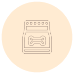

Quem Somos
Produtos
Parceiros
Contato
TUDO PARA SEU PET
trolley
Frete grátis
payments
10% de desconto
storefront
Compre e retire
Quem Somos
Somos o Pet Shop Au Au, uma pet especializado em cães e gatos. Antendendo seu pet com muito amor.
Leia mais..
Atendimento
Qualidade no atendimento é primordial para o pet feliz. Saiba como proporcionar um ambiente de qualidade para ele.
Leia mais...
Tudo que seu pet precisa
pets
